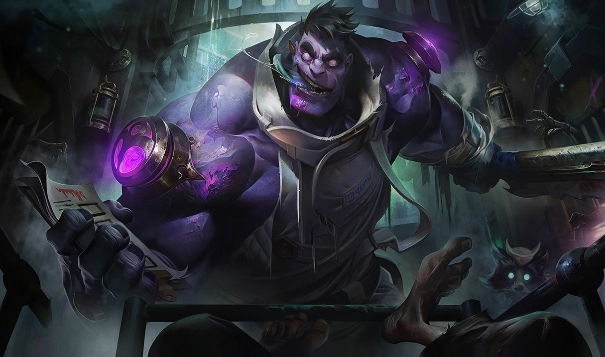

Bir yeraltı yerleşimi izlenimi uyandıran Zaun, aslında Piltover'ın altındaki derin kanyon ve vadilerde uzanan, geniş mi geniş bir alt şehir. Güneş ışınları Zaun'a zar zor ulaşırken, şehre vuran azıcık ışık da örümcek ağı gibi uzanan, paslanmış boruların sızdırdığı dumanın filtresinden geçip, fabrikaları andıran binalarının isli camlarından yansıdıktan sonra zemine varabiliyor. Bir zamanlar tek vücut olan Zaun ve Piltover, artık ayrı ama bir o kadar da birbirine bağımlı iki toplum. Zaun, varlığını sonsuz ve puslu bir alacakaranlığa mahkûm hâlde sürdürmesine rağmen, enerjik insanları ve zengin kültürüyle her gün daha fazla ilerliyor. Piltover'ın refahından nasiplenerek gelişirken, yukarıdaki şehrin karanlık bir yansımasını andırıyor. Piltover'a gelen malların birçoğu dönüp dolaşıp Zaun'un kara borsalarında yer alıyor ve onların denetimlerinden bunalan hextech mucitleri, tehlikeli araştırmalarına Zaun'un kucak açtığını görüp seviniyor. Zaun'un pek çok bölgesi, her tür dengesiz teknolojinin kontrolden yoksun şekilde geliştirildiği başıboş sanayisiyle zehirli bir kirliliğin esiri olmuş durumda ve tehlikelerle dolu. Şehrin alt mahallelerinde nereye baksanız zehirli atıklarla dolu durgun dereler görürsünüz; ama Zaun halkı buralarda bile yaşayıp ilerlemenin bir yolunu bulur.
ŞAMPİYONLAR
Blitzcrank

Dr. Mundo
Ekko

Janna

Jinx

Renata Glasc
Singed

Twitch

Urgot

Viktor

Warwick

Zac

Ziggs

Zeri